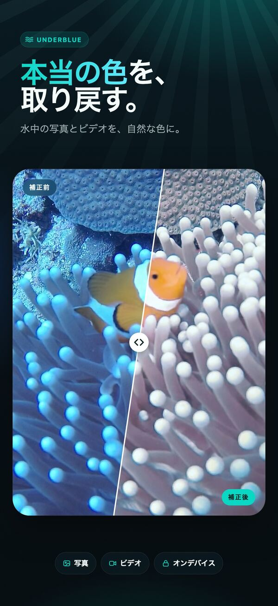
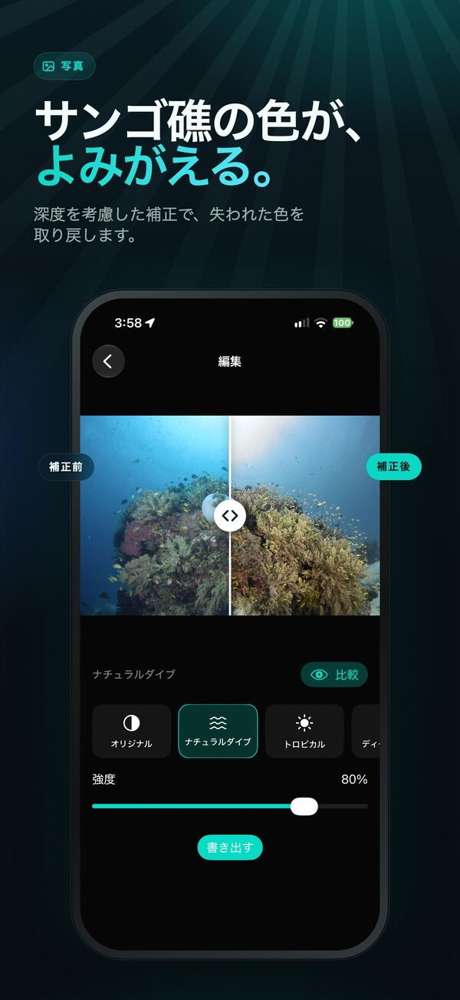
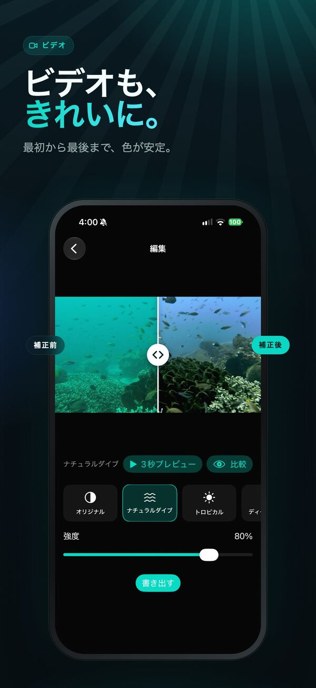
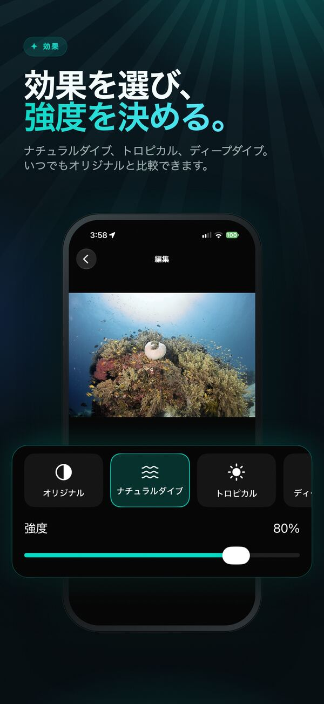
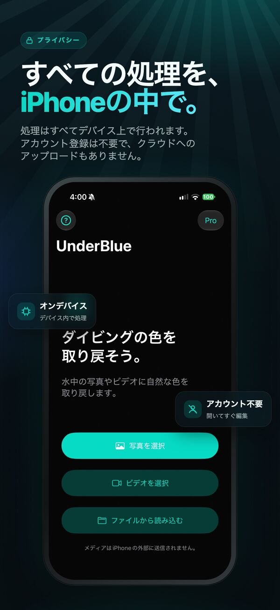

水中写真とビデオの色を取り戻す
iPhone上で完結する、深度を考慮した補正で、水中の写真とビデオに自然な色と鮮明さを取り戻します。

UnderBlueは、水中の写真とビデオに自然な色と鮮明さを取り戻します。
写真やビデオを読み込んで効果を選び、オリジナルと比較してみましょう。効果の強度を調整したり、「カスタム」で明るさ・コントラスト・彩度・明瞭度・色温度を自分で設定したりできます。UnderBlueは深度を考慮した水中補正で、色の減衰と、浮遊物による白いもや（後方散乱）を抑えます。仕上がりは自然で、ビデオでも色が安定します。





主な機能
- ナチュラルダイブ、トロピカル、ディープダイブの3つの効果
- 5つの調整スライダーを備えた「カスタム」
- 深度を考慮した写真とビデオの補正
- フレーム間で色を安定させるビデオ補正
- 元の解像度・4Kでのビデオ書き出し（UnderBlue Pro）
- SDR、および対応環境でのHLG/PQ HDRビデオ出力
- ゲインマップ付きHDR写真の書き出し（UnderBlue Pro）
- 「写真」アプリ、「ファイル」アプリ（カメラのRAWを含む）、共有シートから読み込み
- 元のフレームレート、タイミング、向き、音声を維持
- アカウント不要、クラウドへのアップロードなしの完全オンデバイス処理
無料で試せます
写真1枚と、ビデオ1本の最初の10秒を無料で書き出せます。UnderBlue Proは買い切りです。購入すると、写真の無制限書き出し（一度に最大10枚）、ビデオの全編書き出し、4K書き出し、対応環境でのHDR書き出しが使えるようになります。
UnderBlueはレジャーダイビングの思い出のためのアプリです。科学的な色測定や、プロ向けのカラーグレーディングのためのツールではありません。
Mac版 — 近日公開
1回のダイビングの写真とビデオを、Macでまとめて補正できます。